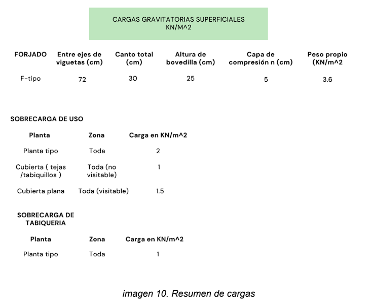
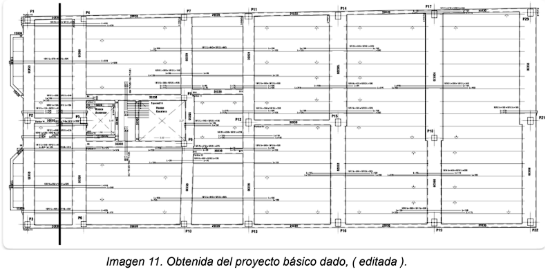

Introducción
Se ha elegido una de las plantas del proyecto dado, en concreto de la primera planta, donde hemos localizado los pilares y vigas para estimar un sistema de distribución de cargas para soportar las mismas. Es decir, hemos imaginado la dirección de repartos de forjados y como están situadas las vigas principales.
Resumen de cargas
En este punto, se han resumido las cargas gravitatorias superficiales. Se ha creado una tabla, (imagen 9), para identificar cuales son las cargas de sobrecarga de uso de la planta tipo, de la cubierta, tabiques y el peso propio del forjado.
Distribución de cargas en las distintas plantas
Para el estudio de la distribución de cargas en las distintas plantas, se ha escogido una alineación en una planta,
A continuación para realizar el esquema de distribución de cargas en las distintas plantas, por lo que hemos introducido el pórtico tipo longitudinal en el programa CESPLA